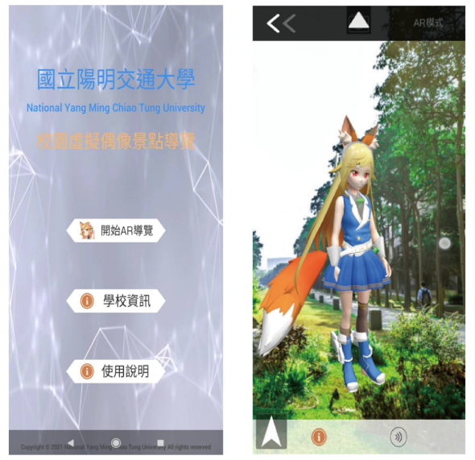
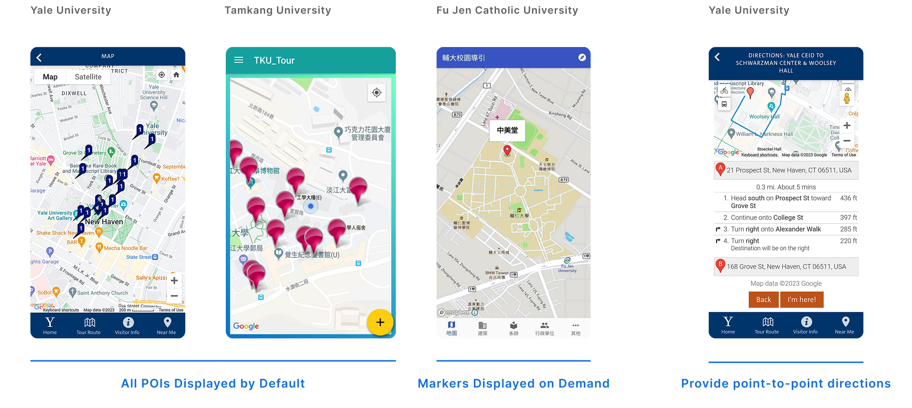
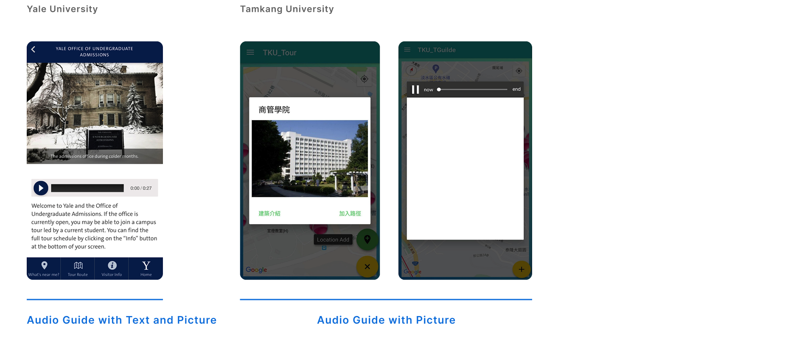
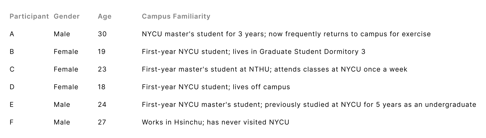
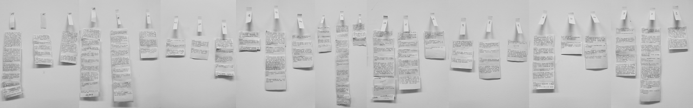
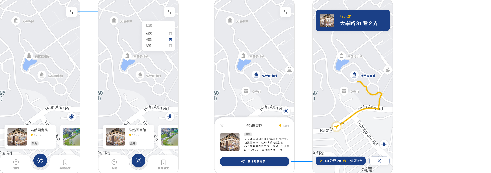
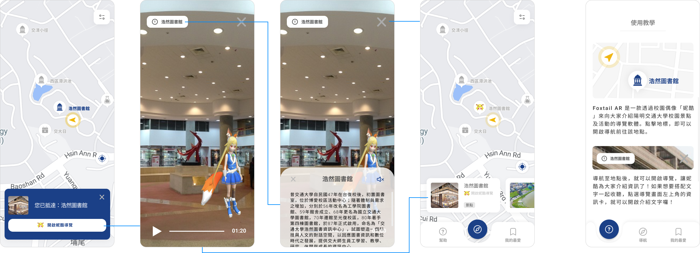
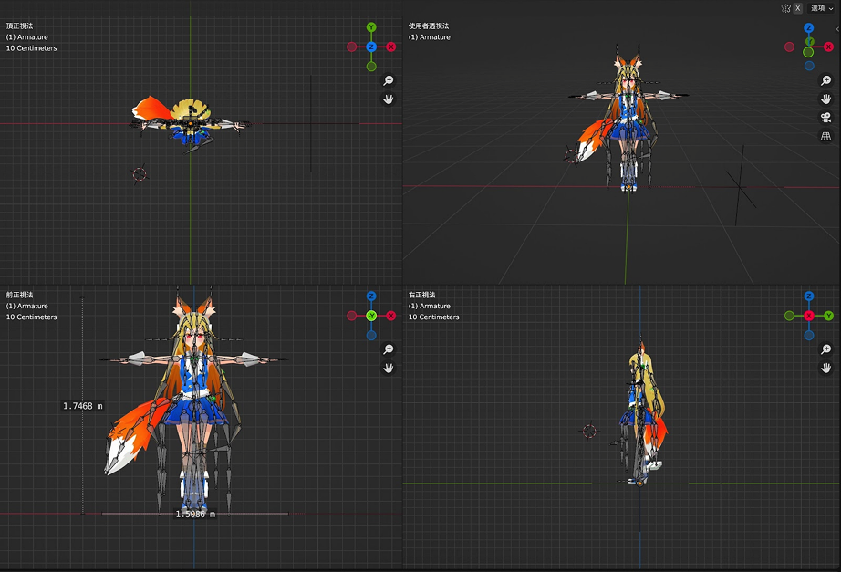
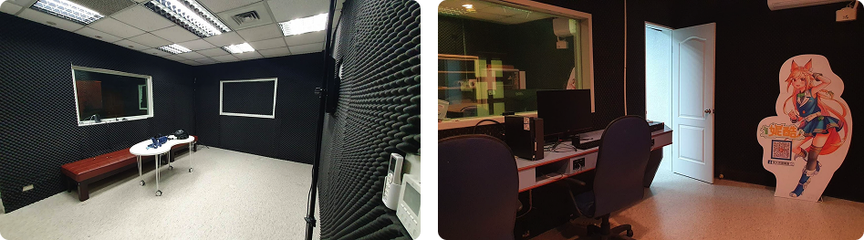

To support the development of a smart campus and promote the university mascot, we designed an AR campus navigation system using the Google Maps API, featuring a virtual mascot to guide users around campus. A total of 38 participants took part in usability testing, and the findings informed design recommendations for future product iterations and related applications.
Universities are rich in humanistic landscapes. Apart from valuing architectural aesthetics, the campus also boasts diverse natural ecosystems. However, due to the extensive size, exploring and comprehending the beauty of campuses can be challenging.
The project was constrained by the annual objectives, budget and completion deadline of the Human-Agent Interaction department. The solution was also based on the version provided by the Android developer.

Campus navigation applications often suffer from dull and unengaging content, which can discourage faculty, students, and visitors from using them. To address this issue, some researchers have incorporated game elements into these applications. However, such applications can be used without physically visiting the campus, limiting users’ opportunities to become familiar with the actual campus environment (Wu et al., 2019).


Our literature review also found that virtual characters representing a region can foster a sense of local identity among residents while sparking visitors’ curiosity. Similar campus tour experiences have also shown that students feel proud to be part of their university. Based on these insights, we hypothesized that featuring the university mascot as a virtual guide in the campus navigation system could encourage greater engagement among faculty, staff, and students.

To get to know the user needs at NYCU, I had in-depth interviews with target users, and utilized affinity diagram and customer journey map (CJM) to analyze the data.




In collaboration with Fox Tail Studio, we used AR mascot visuals in speaking poses and had the performer record the scripts prepared by this study. For the content, we followed recommendations from previous research and kept each audio guide to around one minute to avoid overwhelming users with too much information or making it difficult to absorb (Din et al., 2016).


We developed a PHP web page for management, making it easy to update content and ensuring users have access to accurate, up-to-date campus information.


According to the results of the questionnaires, user experience of Nycu AR was acceptable.


The campus is windier than other areas due to its terrain. During testing, participants had difficulty hearing the audio guide when the weather was poor and had to hold their phones closer to their ears.

Adding a prompt encouraging users to wear headphones when using the app.
“Bamboo Lake has so many small paths. I had to check which path the arrow was pointing to because there were just too many.”
“I didn’t expect the department building entrance to be in such an unusual location. I thought it would be along the main road. ... I could tell it was somewhere nearby, but I wasn’t sure which way to go to find the entrance.”
Due to unfamiliarity with the campus and the complexity of its paths, simply showing landmarks on the map can still confuse users, making it difficult for them to find their destinations quickly and easily.

Provide multiple photos of each location for users to reference or incorporate AR guidance to minimize confusion and improve navigation efficiency.
“I wanted to follow the route it gave me. ... I usually just walk wherever feels natural, so I thought the route it suggested might be the fastest.”
“I wanted to see if the app could show me a shorter route.”
We found that users wanted to explore shortcuts and felt disappointed when the suggested routes were not faster.
Provide multiple route options, including the pathways, allowing users to choose based on their preferences and helping them save time.
“The categories don’t seem to be clearly defined. Some are restaurants, while others are sports facilities.”
Based on the interviews, some participants said they were unsure which existing category the student cafeteria belonged to when looking for the Second Student Cafeteria.

Make restaurants a separate category so users can filter locations more quickly.
“I don’t usually visit the pavilion at Bamboo Lake, so after the tour, I got to know more about it. The same goes for this place (the lab).”
Regardless of familiarity with the campus, we found that users were interested in completing the full guided tour with NYCU AR because it offered new information and experiences.
“It feels more like I’m exploring NYCU. ... Since it’s something from NYCU, it feels more like I’m stepping into the campus.”
“Using the virtual character developed by my own university definitely gives me a stronger sense of identity and familiarity.”
We found that using the university's mascot as a guide can indeed spark users' interest and strengthen their sense of belonging to the university.
“I’m more interested in listening when I see her (mascot) actually speaking. ... Without that, I might just automatically tune out the audio.”
“It feels quite welcoming. Campus tours have always been led by senior students, or sometimes they just use plain, impersonal text. Having someone in front of me who is a virtual avatar, not quite human but still human-like, feels really cute.”
The results also showed that the AR mascot did make the experience more immersive. In the future, increasing interaction with the character could further strengthen users' motivation to use the system and encourage continued use.
In this project, an initial design system was established for the Human-Agent Interaction project app, improving interface consistency and supporting future iterations.